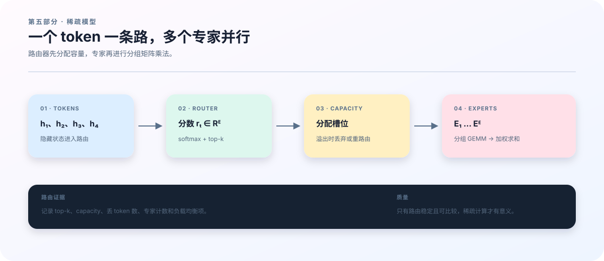

19 MoE：让 token 选择计算路径¶
参数更多，为什么未必每次都算得更多¶
上一章讨论 token 如何读取历史。现在保留 attention，改变后面的前馈网络：准备多组专家参数，让每个 token 只选择其中少数几组。一个专家通常就是一个 MLP；决定选谁的小网络叫 router，整个结构称为 mixture of experts，简称 MoE。
这使“模型存了多少参数”和“一个 token 激活多少参数”成为不同的问题。设有 \(n_{\rm exp}\) 个 SwiGLU 专家，每个专家隐藏宽度为 \(d\)、中间宽度为 \(d_{\rm ff}\)，忽略偏置时共有约 \(3n_{\rm exp}dd_{\rm ff}\) 个专家参数。若一个 token 选择 \(k_{\rm sel}\) 个专家，它的专家前向乘法规模主要对应 \(3k_{\rm sel}dd_{\rm ff}\)。router、排序、通信与内存搬运仍需成本，因此这个参数计数不能直接当作 GPU 加速比。
本章先让四个 token 在两个专家之间选一个，手工追踪排序和还原；再扩展到仓库使用的 top-2 和四专家双卡验证。读者需要上一章的 hidden state 与 softmax，以及前馈层的矩阵形状。暂时不加入共享专家、快路由或记忆修正，最后再说明它们放在哪里。

从路由分数到加权输出¶
对 token 的 hidden state \(h_t\in\mathbb R^d\)，router 产生 \(n_{\rm exp}\) 个 logits \(r_{t,e}\)，再用 softmax 得到概率：
数学式采用列向量约定；代码通常把 token 放在矩阵的行上，由 linear 处理对应转置。当前实现用 \(r_{t,e}+b_e\) 选择 top-\(k_{\rm sel}\)，其中 \(b_e\) 是 load_bias；但混合权重取自原始 \(p_{t,e}\)，再在所选集合 \(S_t\) 内归一化：
\(F_e\) 是第 \(e\) 个专家。选择分数与混合权重必须分开理解：负载偏置可以改变谁被选中，但不是直接把同一个偏置加进混合 softmax。以下例子取 \(b=0\)，所以按概率排序与按 logits 排序相同。
| 原 token 下标（代码） | \(p_{t,1}\) | \(p_{t,2}\) | top-1 专家 |
|---|---|---|---|
| 0 | 0.8 | 0.2 | \(E_1\) |
| 1 | 0.4 | 0.6 | \(E_2\) |
| 2 | 0.7 | 0.3 | \(E_1\) |
| 3 | 0.3 | 0.7 | \(E_2\) |
这里只选一个专家，所选权重重新归一化后为 1。两个专家分别收到 token \([0,2]\) 与 \([1,3]\)。专家分组后的行顺序是 \([0,2,1,3]\)，分组大小是 \([2,2]\)；输出时必须回到 \([0,1,2,3]\)。一个常见错误是专家结果算对了，却把 token 2 的结果交给 token 1。
top-2 时，每个 token 产生两条“token—专家”分配，可能暂时复制输入行。例如三个专家概率为 \((0.6,0.3,0.1)\)，选前两者后权重变为 \((2/3,1/3)\)。若对应专家输出为 \((2,0)\) 与 \((0,3)\)，最终输出为 \((4/3,1)\)。还原的是每条分配，然后才按同一个 token 聚合，不能在分组时丢掉第二条路径。
top-1 例子只用于解释重排。在本实现的归一化规则下，单个所选权重恒为 1，离散选择本身也没有通常意义下的梯度，因此该路径上的语言模型损失不会通过混合权重训练 router；辅助项仍可提供梯度。不能把这个教学例子直接当成所有 top-1 MoE 的训练定义。仓库双卡验证使用 top-2。
容量与负载：两个不同的问题¶
若所有 token 都偏爱同一专家，逻辑上仍可逐个处理，但该专家可能成为计算和显存瓶颈。带固定容量的实现常用
给每个专家分配槽位，\(\gamma\) 为 capacity factor，\(T_{\rm tok}\) 是一次路由中的 token 数。上例 \(T_{\rm tok}=4\)、\(k_{\rm sel}=1\)、\(n_{\rm exp}=2\)、\(\gamma=1\)，故容量为 2，均衡分配刚好放得下。若另一次路由把四个 token 都送往 \(E_1\)，则该专家超出两个槽位；系统必须事先规定丢弃、溢出缓冲、重路由或其他处理方式。
这是常见设计空间，不能误写为本仓库已有的功能。moe_forward 当前采用无丢弃分组路径：按实际分配计数构造 group_sizes，没有 capacity factor 配置，也没有自动丢弃溢出的 token。它避免了这类丢弃语义，但仍可能受到负载不均衡、通信和临时内存成本影响。Switch Transformer 可作为容量与负载均衡设计的原始参考。
为鼓励分配分散，代码计算平均路由概率 \(\bar p_e\) 和分配频率 \(\rho_e\)。若所有 token 都有效，则
有 mask 时，分子分母都按有效 token 权重计数。四 token 例子中 \(\bar p=(0.55,0.45)\)、\(\rho=(0.5,0.5)\)，所以 \(\mathcal L_{\rm aux}=1\)。若四个 token 的概率全是 \((0.9,0.1)\) 且 top-1 全选 \(E_1\)，则该值为 \(2\times0.9=1.8\)。这说明该项对负载集中给出不同信号，并不证明 1 是任意路由情形下的严格下界，也不代表语言模型准确率。
代码还计算 \(\mathcal L_z=T_{\rm tok}^{-1}\sum_t(\log\sum_e e^{r_{t,e}})^2\)，有 mask 时同样取加权平均，用于约束 router logits 的尺度。训练总损失按配置加入辅助项和 z-loss；报告语言建模质量时应单独看 NLL，不能把正则项系数变化当成预测能力变化。
为什么要把小矩阵乘法分组¶
路由之后若逐 token 调用 MLP，会产生许多很小的矩阵乘法，难以充分利用 GPU。分组计算先把属于同一专家的输入排在一起，再对各组应用对应的专家矩阵。对四 token 例子，逻辑上是
Grouped GEMM 把“多组输入乘各自权重”的描述交给底层算子，而不是把专家参数混成一个普通 dense 层。moe.py 先稳定排序专家 ID，得到 token 索引和分组大小；计算 SwiGLU 的 gate、up、down 投影；最后反向散射并加权。前述 \([0,2,1,3]\) 是可以手工检查的最小重排案例。
但“代码用了 grouped GEMM”仍不等于“高阶训练只计算激活专家的 FLOPs”。grouped_gemm.py 的普通原始前向使用 jax.lax.ragged_dot；为支持批处理及高阶求导，自定义 JVP 的参考路径会循环专家并用 mask 合并结果。因此，开头的激活参数估算描述算法结构，实际内外循环训练成本必须通过编译成本分析和设备测量确定。这一点会影响下一章的同算力比较。
两张 GPU 上，专家到底分在哪里¶
仓库 tiny mesh 验证有四个专家，\(d=d_{\rm ff}=16\)。按代码的权重存储约定，一组 gate 权重全局形状为 \([4,16,16]\)，维度依次是专家、输出、输入。使用两张 GPU、expert_parallel_size=2 时：
| 对象 | 全局形状 | GPU 0 本地形状 | GPU 1 本地形状 |
|---|---|---|---|
| 专家 gate 权重 | \([4,16,16]\) | \([2,16,16]\) | \([2,16,16]\) |
| 验证输入 token IDs | \([2,5]\) | \([2,5]\) | \([2,5]\) |
| 预测目标 mask | \([2,4]\) | \([2,4]\) | \([2,4]\) |
这里 mesh 是 \(\text{data}=1,\text{expert}=2\)，所以输入没有沿 data 轴再切成两份。五个 token 提供四个 next-token 目标；这是上一章标签对齐在多卡输入上的延续。JAX 根据分片和计算图安排所需的数据传输；源码中没有一条手写 all-to-all 命令可直接代表全部通信成本，实际 collective 应通过编译结果或 profiler 检查。
远程作业应恰好有两张可见 GPU，且环境已经安装，再在仓库根目录运行。脚本把所有可见设备放入 mesh；八张可见卡会形成 data=4、expert=2，而内置 batch=2 无法沿 data 轴切分。应申请两卡作业，或在调度器已分配的设备映射内选取两卡；不要用机器的全局 GPU 编号覆盖调度器设置。
预期报告含 passed: true、scale: "tiny"、mesh、expert_shards 和 checkpoint_roundtrip: true。正好两张 GPU 时应看到 data=1、expert=2，以及专家矩阵全局第一维为 4、本地第一维为 2。脚本执行两个训练步，并在 tiny 模式中恢复优化器与模型状态，比较恢复后的下一步结果。
如果设备数不能被专家并行度整除，先查实际可见设备和 mesh 配置；若专家矩阵不能切分，查专家数与分片轴；若恢复失败，先查检查点目录及原始报错，不要绕过恢复检查。成功只验证这一短序列、该精度和该拓扑的实现路径，不能证明大模型负载均衡、通信效率或长期质量收益。
在同一个框架中区分几种研究问题¶
moe.py 还允许在 router logits 上加入 fast router 修正或 Delta memory 读出，允许共享专家输出参与残差。三条适应路线应明确区分：mlp 更新的是 MoE 之前额外的稠密 MLP′，router 更新的是路由适配器，delta_router 用递归记忆状态修正路由。当前内循环不更新 moe.experts；专家参数由外循环训练。
这些开关改变了适应位置或状态机制，不应一次全部打开后，把结果概括为“MoE 更好”。从上述固定路由例子出发，先验证普通 MoE 的分组与还原，再分别比较稠密 MLP′ 适应、路由适配器更新、记忆路由和共享参数重复计算，实验才有清晰的归因。
本章的核心证据链是：分数决定选择，选择决定分配，分配决定分组，分组结果还原为 token 输出；负载与成本必须沿着这条链一起测量。下一章会把质量与成本放到同一张实验表中。